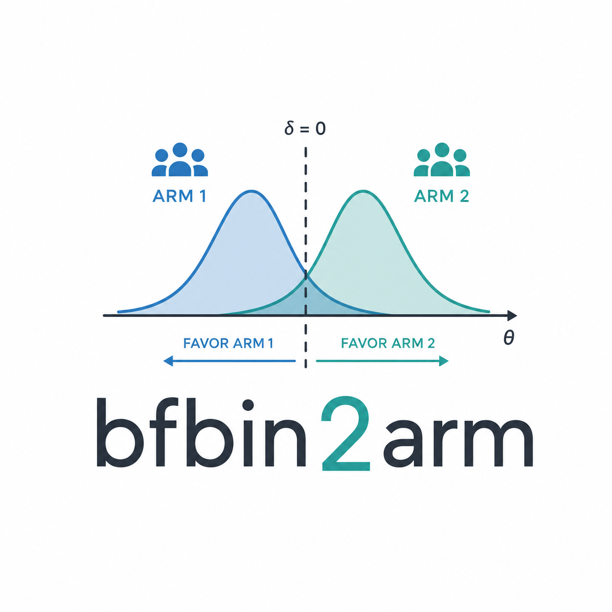

Calibrate a Bayesian t-test design
calibrate_bf_ttest.RdSearches an integer sample-size range and returns the smallest design that satisfies the requested frequentist and Bayesian operating-characteristic constraints for a one-sample or paired Bayesian t-test.
Usage
calibrate_bf_ttest(
design = c("one.sample", "paired", "two.sample.pooled"),
hypothesis = c("two.sided.pointnull", "greater.pointnull", "greater.composite"),
n_min,
n_max,
k1 = 1/10,
k0 = 10,
analysis_prior_sd = 0.5,
analysis_prior = NULL,
freq_t1e = NULL,
freq_power = NULL,
bayes_power = NULL,
bayes_t1e = NULL,
pce_h0 = NULL,
design_prior_h1 = list(type = "point", effect = 0.4),
design_prior_h0 = list(type = "point", effect = 0),
analysis_prior_h0 = NULL,
analysis_prior_h1 = NULL,
control = NULL
)Arguments
- design
Design type. One of
"one.sample","paired", or"two.sample.pooled". The current implementation supports"one.sample"and"paired".- hypothesis
Hypothesis configuration. One of
"two.sided.pointnull","greater.pointnull", or"greater.composite".- n_min
Minimum candidate sample size.
- n_max
Maximum candidate sample size.
- k1
Evidence threshold for evidence in favour of the alternative: evidence for H1 is declared when
BF01 <= k1.- k0
Evidence threshold for evidence in favour of the null: evidence for H0 is declared when
BF01 >= k0.- analysis_prior_sd
Standard deviation of the default analysis prior. Used when a relevant explicit analysis prior is not supplied.
- analysis_prior
Analysis prior for point-null hypotheses. If
NULL, a default prior determined byhypothesisandanalysis_prior_sdis used.- freq_t1e
Optional upper bound on the frequentist type-I error, calculated under the null effect.
- freq_power
Optional list of frequentist power specifications. Each element must contain
effectand may contain a targettarget.- bayes_power
Optional lower bound on Bayesian power, averaged under
design_prior_h1.- bayes_t1e
Optional upper bound on the Bayesian type-I error, averaged under
design_prior_h0.- pce_h0
Optional lower bound on the probability of compelling evidence for H0, averaged under
design_prior_h0.- design_prior_h1
Design-prior specification under H1.
- design_prior_h0
Design-prior specification under H0.
- analysis_prior_h0
Analysis prior under H0 for
"greater.composite"hypotheses.- analysis_prior_h1
Analysis prior under H1 for
"greater.composite"hypotheses.- control
Optional named list controlling numerical integration, root-finding, search strategy, verification, and progress reporting.
Value
An object of class "bf_ttest_design". On success, it contains the
selected sample size (n), decision regions, operating characteristics,
a constraint table, search results, and plot data. If no feasible design is
found, it returns a "bf_ttest_design" object with success = FALSE.
Examples
if (FALSE) { # \dontrun{
design <- calibrate_bf_ttest(
design = "one.sample",
hypothesis = "greater.composite",
n_min = 20,
n_max = 120,
k1 = 1 / 20,
k0 = 3,
freq_t1e = 0.05,
freq_power = list(main = list(effect = 0.40, target = 0.80)),
design_prior_h0 = list(
type = "truncnormal",
mean = -0.10,
sd = 0.25,
lower = -Inf,
upper = 0
),
design_prior_h1 = list(
type = "truncnormal",
mean = 0.40,
sd = 0.20,
lower = 0,
upper = Inf
),
control = list(progress = FALSE)
)
} # }